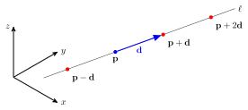
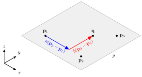
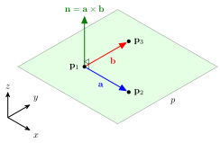
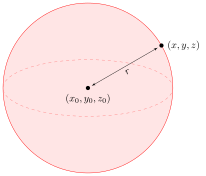

Points, lines, planes and spheres
Contents
Points, lines, planes and spheres#
Computer graphics uses points, line, planes and spheres to describe virtual environments. Euclid defined the first three of these in his works The Elements around 300 BCE which is considered the most important mathematical works ever written. It introduced mathematical concepts of Euclidean geometry, mathematical proofs, logic and number theory.
Points#
Euclid described a point as “that which has no part”. A point has position only, it has no length, width or thickness, and thus no area or volume. As we have already seen, a typical point in \(\mathbb{R}^n\) is described by its co-ordinates \((a_1,a_2,\dots,a_n)\), where the \(a_i \in \mathbb{R}\).
Lines#
Euclid defined a line as having “breadthless length” which is another way of saying a line is a one dimensional object that has a length but no breadth or volume.
Definition 10 (Vector equation of a line)
Let \(\mathbf{p} = (p_1, \ldots ,p_n)\) be the position of a point in \(\mathbb{R}^n\) and \(\mathbf{d} = (d_1, \ldots, d_n)\) a non-zero vector in \(\mathbb{R}^n\). The line \(\ell\) 1 which passes through \(\mathbf{p}\) in the direction of \(\mathbf{d}\) has equation
where \(\mathbf{q}\) is a general point on \(\ell\) and \(t\in \mathbb{R}\) is known as a parameter.
In other words, every point on \(\ell\) is obtained by adding some scalar multiple of \(\mathbf{d}\) to \(\mathbf{p}\) (Fig. 10). So \(\ell\) is the line which passes through \(\mathbf{p}\) in the direction of \(\mathbf{d}\). We call the vector \(\mathbf{d}\) a direction vector of the line.
{kind=link}

Fig. 10 The position of any point on the line \(\ell\) can be obtained by adding a scalar multiple of \(\mathbf{d}\) to \(\mathbf{p}\).#
In practice one can determine the direction vector \(\mathbf{d}\) of a line by taking any two distinct points \(\mathbf{p}_1\) and \(\mathbf{p}_2\) on \(\ell\) and setting \(\mathbf{d}=\mathbf{p}_2 - \mathbf{p}_1\) and \(\mathbf{p}\) in the line equation to be any point on the line. In particular, \(\mathbf{d}\) and \(P\) are not unique.
Example 7
A line \(\ell\) in \(\mathbb{R}^3\) passes through the two points at \(\mathbf{p}_1=(1,0,2)\) and \(\mathbf{p}_2 = (2, 2, 2)\).
(i) Find the equation of the line \(\ell\).
Solution
Calculating the direction vector
Therefore the equation that describes \(\ell\) is
(ii) Find the position of the point one quarter of the way along the chord \(\mathbf{p}_1 \to \mathbf{p}_2\)
Solution
(iii) Does the line \(\ell\) pass through the point at \(\mathbf{p}_3 = (2, 1, 2)\)?
Solution
If \(\mathbf{p}_3\) lies on \(\ell\) then the following system has a unique solution
So we have the system
The second equation gives \(t = 1/2\) so substituting into the first equation gives \(t = 3/2\) which is a contradiction so the line \(\ell\) does not pass through \(\mathbf{p}_3\).
Planes#
A plane is a flat two-dimensional surface. The vector equation for a plane in \(\mathbb{R}^n\) is very similar to that of a line. We just need two direction vectors instead of just the one we needed for a line.
Definition 11 (Vector equation of a plane)
The position of a point \(\mathbf{p}\) that lies on the plane \(p\) which passes through the three point \(\mathbf{p}_1\), \(\mathbf{p}_2\) and \(\mathbf{p}_3\) is
where \(a, b \in \mathbb{R}\) are parameters (Fig. 11).
{kind=link}

Fig. 11 The vector equation of a plane.#
In other words, every point on \(p\) is obtained by adding some scalar multiples of the vectors \(\mathbf{p}_2 - \mathbf{p}_1\) and \(\mathbf{p}_3 - \mathbf{p}_2\). Note that we need \(\mathbf{p}_2 - \mathbf{p}_1\) and \(\mathbf{p}_3 - \mathbf{p}_2\) not to be parallel else we would have only described a line again.
The normal vector#
A more convenient way of describing a plane uses the normal vector.
Definition 12 (The normal vector)
The normal vector to a plane is a vector that is perpendicular to that plane. If \(\mathbf{a}\) and \(\mathbf{b}\) are two vectors that lie on a plane then the normal vector is calculated using \(\mathbf{n} = \mathbf{a} \times \mathbf{b}\).
{kind=link}

Fig. 12 The normal vector \(\mathbf{n}\) is perpendicular to the plane \(p\).#
Recall the geometric definition of a dot product which states
where \(\theta\) is the angle between \(\mathbf{a}\) and \(\mathbf{b}\). If the two vectors are perpendicular then \(\theta = \pi / 2\) and \(\cos(\theta) = 0\). Therefore if \(\mathbf{a} \cdot \mathbf{b}=0\) then \(\mathbf{a}\) and \(\mathbf{b}\) are perpendicular. If \(\mathbf{p}\) lies on a plane with normal vector \(\mathbf{n}\) then if \(\mathbf{q}\) is another point that lies on the plane then the vector \(\mathbf{p} - \mathbf{q}\) must be perpendicular to \(\mathbf{n}\), i.e.,
which can be written as
which gives the point-normal equation of a plane.
Definition 13 (Point-normal equation of a plane)
The point normal equation of a plane is
where \(\mathbf{n}\) is the normal vector, \(\mathbf{r}\) is a vector on the plane and \(s\) is a scalar.
Example 8
A plane passes through the three points \(\mathbf{p}_1 = (1, 0, 3)\), \(\mathbf{p}_2 = (2, 1, 1)\) and \(\mathbf{p}_3 = (0, 1, 3)\).
(i) Determine the point-normal equation of the plane.
Solution
Calculate the normal vector
Calculate the scalar \(s\)
therefore the point-normal equation of the plane is
(ii) Does the point with position vector \(\mathbf{p}_4 = (1, 2, 5)\) lies on this plane?
Solution
Calculate \(\mathbf{n} \cdot \mathbf{p}_4\)
therefore \(\mathbf{p}_4\) does not lie on the plane.
Spheres#
A sphere is a three-dimensional geometric object where all points on the surface of the sphere are the same distance from its centre.
Definition 14 (Equation of a sphere)
The Cartesian equation of a sphere centred at \((x_0, y_0, z_0)\) is

- 1
\(\ell\) is used here instead of \(l\) to avoid confusing with a 1 or uppercase i.